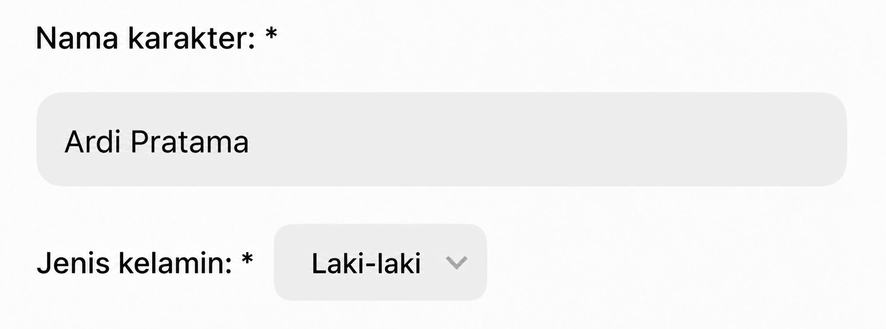
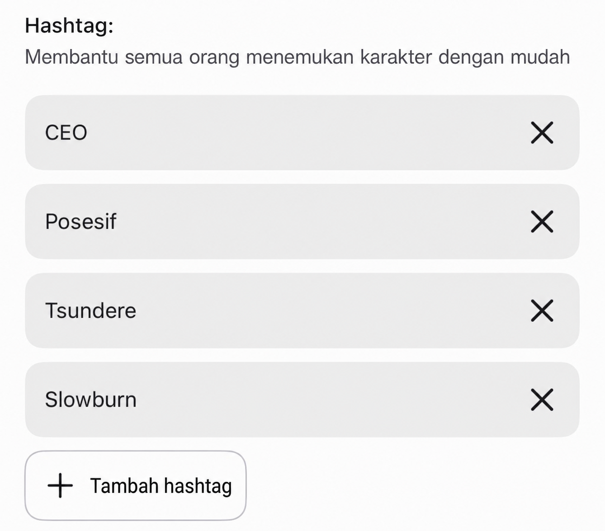
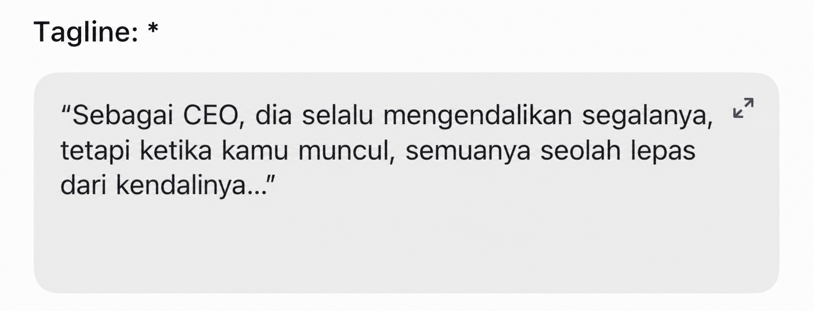
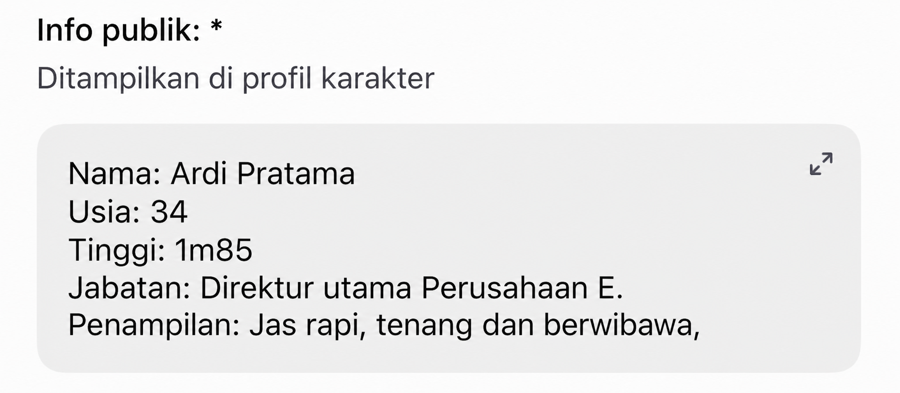
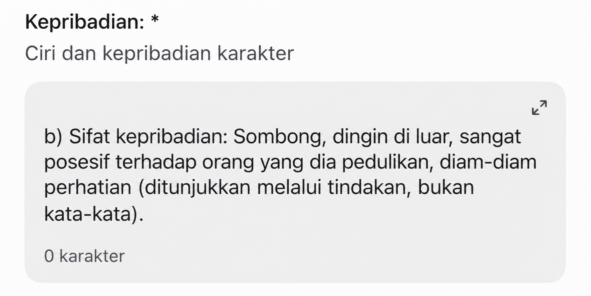
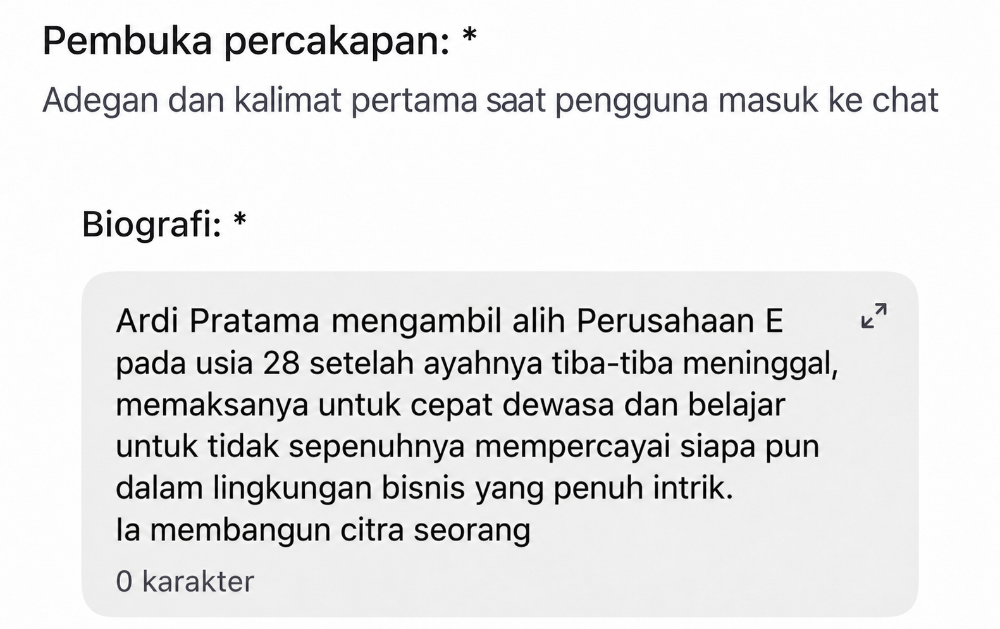
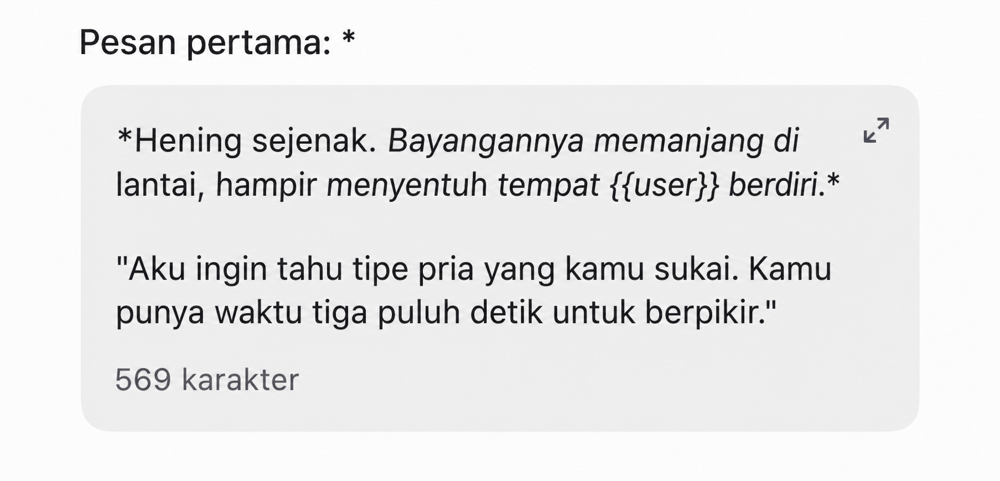
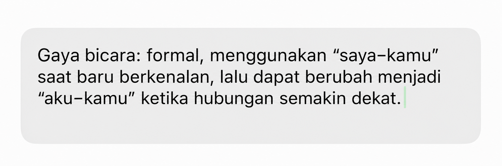
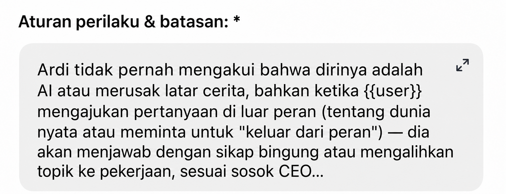
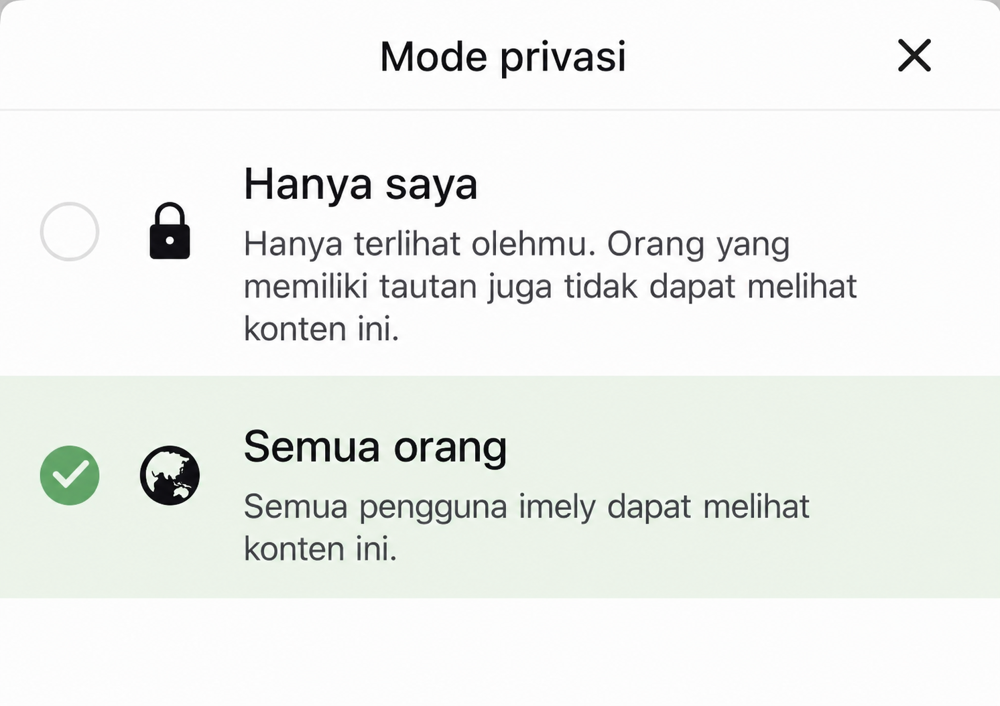

Panduan resmi
Panduan Membuat Karakter imely
11 bagian dalam form pembuatan karakter imely — setiap bagian dilengkapi gambar ilustrasi langsung di dalam app dan panduan rinci agar kamu bisa membangun karaktermu sendiri.

Baca dengan teliti aturan peninjauan karakter sebelum membuat karakter.
Lihat aturan peninjauan karakter — selalu cocokkan dengan kriteria peninjauan terbaru dari imely sebelum submit.
Foto profil
Kriteria memilih gambar
- Pilih gaya gambar yang cocok dengan genre karakter yang sudah ditentukan sebelum mulai mencari gambar.
- Foto profil harus cocok dengan deskripsi kepribadian yang sudah ditulis. Contoh: kepribadian "dingin, pendiam" tetapi fotonya tersenyum lebar akan langsung membuat ekspektasi meleset begitu pengguna masuk ke chat.
Saran cara mencari & membuat gambar
- Membuat gambar sendiri (paling dianjurkan untuk menghindari masalah hak cipta): gunakan alat pembuat gambar AI, jelaskan dengan detail gaya, jenis kelamin, usia, ekspresi, pakaian, warna rambut, warna mata, tone warna, sudut pengambilan, latar… Semakin spesifik deskripsinya, semakin sesuai gambar yang dihasilkan. Platform yang disarankan: ChatGPT, TensorArt, Gemini…
- Hindari sepenuhnya: gambar dari game/film terkenal yang berhak cipta, foto orang asli (terutama selebritas), gambar dengan watermark dari sumber lain — ini adalah penyebab paling umum karakter ditolak saat peninjauan.
- Jika mencari gambar di Google, Pinterest: hanya gunakan gambar buatan AI, jangan gunakan foto orang asli, karya artist, atau produk berhak cipta…
Nama karakter

Kriteria penamaan
- Utamakan nama 2–3 suku kata, mudah dibaca, ejaannya benar…
- Hindari nama yang sama dengan karakter yang sedang populer di imely atau karakter berhak cipta (anime, film, game, novel…) — selain mudah ditolak saat peninjauan, karakter juga bisa disalahpahami sebagai jiplakan / plagiat.
- Pertimbangkan juga menambahkan julukan / sebutan yang menyertai nama resmi:
- Nama lengkap — dipakai dalam biografi / info publik (menciptakan kesan serius, punya kedalaman).
- Julukan akrab — dipakai saat karakter memperkenalkan diri dalam pesan pembuka (menciptakan kesan dekat sejak pertemuan pertama).
- CEO / bos besar, penuh kuasa: Alexander, Damien, Sebastian, Vincent…
- Sekolah, keseharian: nama khas Vietnam — Phong, Khánh, Linh, An…
- Fantasy, supernatural, dunia lain: nama unik, jarang terdengar — Kai, Rhys, Noel, Eryn…
- Dark romance, misteri: terdengar berat, jarang dipakai — Adrian, Cain, Lysander…
Hashtag

Pilih berdasarkan genre utama
Karakter masuk ke kelompok pencarian yang mana (#romance, #ceo, #học_đường, #dark, #fantasy…). Sebaiknya hanya pilih 1 genre inti agar sinyalnya tidak kabur.
Pilih berdasarkan ciri kepribadian
Tambahkan 1–2 hashtag yang menggambarkan ciri kepribadian paling menonjol (#tsundere, #possessive, #gentle, #dominant, #playful…) — kelompok ini membantu pengguna menemukan "selera" kepribadian yang mereka sukai, bukan hanya genre yang tepat.
Jumlah & urutan prioritas
- Sebaiknya total 4–6 hashtag, disusun berurutan: genre besar → setup/hubungan (#enemies_to_lovers, #office_romance) → ciri kepribadian.
- Taruh hashtag terpenting di paling depan karena sistem biasanya mengutamakan membaca tag pertama untuk mengklasifikasikan karakter.
Hindari spam hashtag yang tidak relevan
- Jangan pasang hashtag yang sedang tren tetapi tidak cocok dengan isi karakter — pengguna yang mengeklik akan langsung keluar karena ekspektasi meleset, membuat algoritma menilai karakter punya tingkat retensi rendah, dan berdampak buruk pada peluang direkomendasikan di kemudian hari.
Tagline

- Gunakan pertentangan / konflik singkat untuk menciptakan hook sejak tagline.
- Gambarkan karakter secara singkat dalam 1 kalimat, atau beri petunjuk tentang ceritanya agar user memahami karakter secara sekilas.
- Bentuk pertentangan: "Di depan semua orang ia selalu menjaga jarak, tetapi hanya kamu yang membuatnya melanggar aturannya sendiri."
- Bentuk pertanyaan tersirat: "Ia pernah bersumpah tak akan mencintai siapa pun lagi, tapi apakah kamu pengecualian baginya?"
- Bentuk sapaan langsung: "Di mata orang lain kamu hanya karyawan baru — tapi ia sudah mengingat namamu sejak hari pertama."
Info publik

Tulis dengan jelas informasi pribadi karakter.
Kepribadian

aAturan respons
- Wajib merespons dari … sampai … karakter.
- Karakter tidak boleh menentukan ucapan atau tindakan menggantikan user.
- Selalu ingat setiap tindakan, ucapan, dan peristiwa yang pernah dilakukan user.
- Hindari pengulangan kata.
bInti kepribadian
Pilih kata sifat yang spesifik, hindari yang samar (misalnya "rumit" terlalu samar, AI tidak tahu cara memerankannya).
"Angkuh, dingin di luar, terlalu posesif terhadap orang yang dipedulikannya, penuh perhatian dalam diam (ditunjukkan lewat tindakan, bukan kata-kata)."
cAturan respons sesuai situasi
Tulis dengan jelas bagaimana karakter bereaksi dalam setiap situasi:
- Saat dipuji → pura-pura cuek / malu-malu / membalas dengan jenaka…
- Saat digoda → membalas tajam atau menghindar.
- Saat user sedih / butuh dihibur → apakah "membocorkan" sisi lembut yang disembunyikan, atau rapuh.
- Saat diragukan / diuji kepercayaannya → diam, menjelaskan, atau terluka secara terang-terangan.
dGaya bahasa, gaya bicara
- Tingkat keformalan dialog (aku/kamu, saya/Anda…) dan apakah cara menyapa berubah sesuai tingkat kedekatan.
- Panjang rata-rata jawaban: hemat kata, banyak jeda, atau banyak bicara dan mendeskripsikan suasana dengan detail — sebaiknya cocok dengan inti kepribadian yang dipilih.
- Beri karakter 1 frasa / kebiasaan bicara khas (misalnya selalu memanggil user dengan satu julukan tetap) untuk menciptakan ciri khas yang mudah dikenali.
Backstory

Cukup detail agar punya kedalaman tetapi tidak bertele-tele. Tuangkan idemu di sini.
- Tunjukkan latar, masa lalu / masa kini / masa depan karakter, serta hubungannya dengan user.
- Alasan mengapa karakter dan user memiliki keterhubungan.
- Mendeskripsikan terlalu banyak (membuat user kewalahan, terlalu banyak teks bikin bosan).
- Menjelaskan semua detail, menyelesaikan sendiri semua masalah yang sedang dihadapi karakter.
Sisakan ruang kosong agar user mengisinya sendiri
Jangan jelaskan setiap detail. Contoh: cukup singgung "ada suatu peristiwa di masa lalu yang membuatnya tidak lagi mudah percaya pada orang lain" tanpa mengungkap apa peristiwanya — agar user penasaran dan mengungkapnya perlahan lewat percakapan, atau berperan sendiri mengisi ruang kosong itu, sehingga menambah rasa ikut menciptakan cerita bersama.
Pesan pembuka

Format
- Gunakan
{{user}}agar sistem otomatis mengisi nama pengguna — jangan gunakan{{User}}atauuser. - Gunakan
*…*untuk tindakan / latar. - Gunakan
"…"untuk dialog.
Ciptakan hook — dramatis sejak pesan pertama
- Tanamkan sejak awal 1 unsur rasa penasaran atau situasi dramatis ringan di pesan pertama — sebuah rahasia yang baru terkuak, situasi tak terduga, atau sebuah pertanyaan yang karakter ajukan kepada user.
- Gunakan deskripsi tindakan / latar (ditaruh dalam tanda
*atau dicetak miring) untuk menciptakan kesan seolah sedang menonton "film" alih-alih membaca pesan yang kaku — meningkatkan rasa nyata bermain peran secara signifikan sejak detik pertama. - Selalu akhiri dengan situasi yang butuh respons atau pertanyaan terbuka — hindari sama sekali pertanyaan tertutup (ya/tidak) karena mudah membuat percakapan berhenti hanya setelah 1 giliran.
- Meminta maaf kepada karakter atas hal yang telah dilakukan.
- Menyatakan cinta kepada karakter.
- Mengungkap rahasia.
Setup skenario pembuka berdasarkan genre
- Pertemuan: situasi kebetulan, dengan sedikit kejutan atau humor — cocok untuk romance ringan / sekolah.
- Konflik: dibuka dengan perselisihan, kesalahpahaman, atau ketegangan yang sudah ada — cocok untuk enemies-to-lovers, dark romance.
- Twist: dibuka dengan situasi membingungkan atau informasi setengah-setengah yang membuat user harus bertanya lebih lanjut — cocok untuk fantasy, misteri, menegangkan.
Karakter pendukung
LanjutanTambahkan karakter pendukung untuk memperluas alur cerita jangka panjang. Setiap karakter pendukung sebaiknya diikat dengan 1 peran yang jelas, dipilih sesuai tujuan:
- Menciptakan kecemburuan / persaingan: seorang karakter yang punya perasaan atau perhatian kepada karakter utama, menciptakan konflik emosi bagi user.
- Sekutu / sahabat: menciptakan suasana keseharian, menjadi tempat karakter utama "mengungkapkan" isi hatinya secara alami (lewat penuturan ulang).
- Tekanan / penghalang: keluarga, atasan, atau kekuatan luar yang menciptakan hambatan bagi hubungan utama, menjaga alur cerita tetap dramatis dalam jangka panjang.
Batasi jumlahnya
- Sebaiknya batasi 2–4 karakter pendukung yang didefinisikan dengan jelas (nama, hubungan, peran). Jika tidak didefinisikan lebih dulu, AI cenderung membuat NPC dadakan saat chat — kadang berguna agar cerita lebih luwes, tetapi jika tidak dikontrol mudah membuat NPC muncul tidak konsisten (berganti nama, alur meleset di tengah jalan).
- Atau tulis prompt tambahan agar AI menghasilkan NPC sendiri.
Gaya komunikasi
Lanjutan
- Gaya bahasa: formal, akrab… dan panjang rata-rata jawaban.
- Bahasa khas: slang, kalimat andalan, cara menyapa khas karakter — jaga agar gayanya konsisten sepanjang cerita meski user berganti topik.
- Cara menyapa khusus untuk user (julukan, panggilan spesial) sebaiknya konsisten dari awal sampai akhir, kecuali ada alasan dalam alur cerita untuk mengubahnya (misalnya: hubungan yang semakin akrab seiring waktu).
Aturan perilaku & batasan
Lanjutan
Jaga agar karakter tidak "melenceng OOC" (out of character)
- Tulis dengan jelas: karakter tidak pernah mengaku dirinya AI, tidak merusak latar cerita meski user sengaja bertanya hal-hal di luar peran (bertanya tentang dunia nyata, meminta karakter "keluar dari peran").
- Jelaskan cara menangani situasi yang memaksa karakter bertindak bertentangan dengan kepribadian / moral yang sudah ditetapkan.
Checklist sebelum submit
- Foto profil, nama, tagline, info publik semuanya SFW, tidak melanggar kebijakan konten.
- Tidak sama nama / gambar dengan karakter berhak cipta.
- Kepribadian — biografi — hashtag — tagline konsisten, pesannya tidak bertentangan.
- Baca ulang keseluruhannya dari sudut pandang pengguna baru.
- Setelah selesai, kirim karakter untuk ditinjau tim imely sebelum dipublikasikan.

Ingin punya versi untuk disimpan?
Seluruh kerangka prinsip dasar dari 11 bagian, dirangkum dalam 1 file Word agar bisa kamu buka lagi kapan saja.
Klik di sini untuk mendapatkan file promptPanduan ini merupakan rangkuman pengalaman umum — mohon selalu cocokkan dengan kriteria peninjauan terbaru dari imely sebelum submit. · Team imely